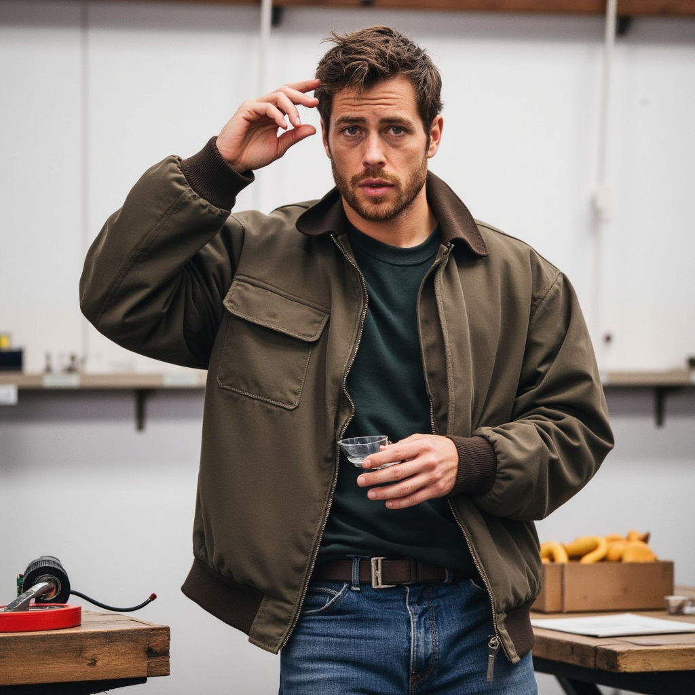
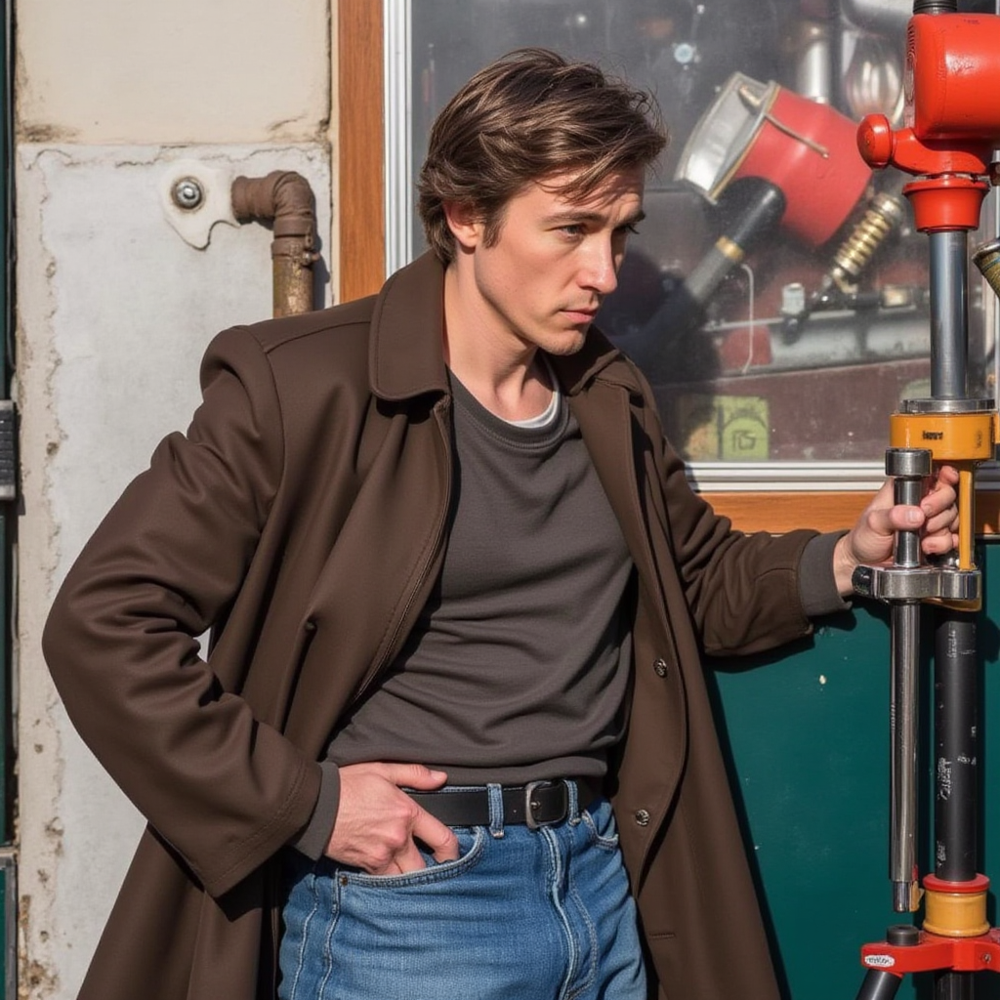
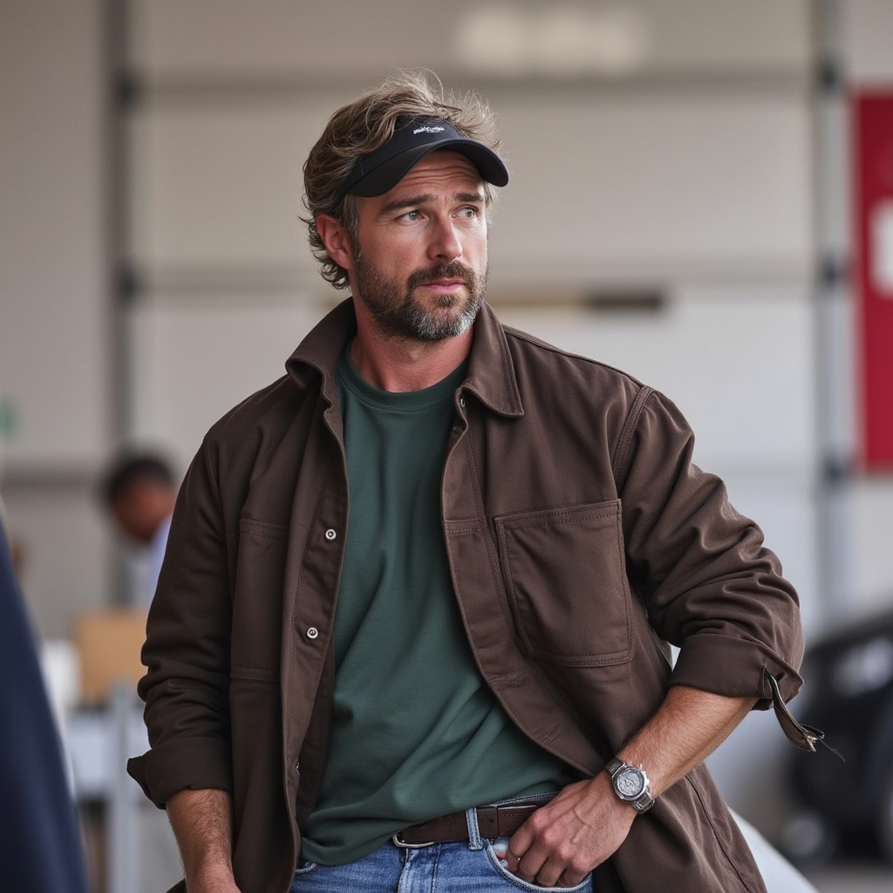

Murat (Ekibin Mekanik Mühendisi)
Babamın elden düşme bir arabası vardı, sürekli arızalanırdı. Onu tamir etmeye çalışırken daha on iki yaşında motorları söküp takmayı öğrenmiştim. İlk işim bir hurdacıdan aldığım motoru tamir edip çalıştırmaktı. Lise yıllarında ise mahallede herkesin bisikletini ve motosikletini ben tamir ederdim. Sonunda bu işi meslek edinmeye karar verdim ve bir usta yanında çırak oldum. Şimdi, hem eski arabaları restore ediyor hem de günlük tamir işlerini yapıyorum. Elimde yağ ve pas olmadan geçen bir gün düşünemem!

Selim (Ekibin Elektrik Mühendisi)
Üniversitede mühendislik okuyordum ama kitapların arasında sıkışmış gibi hissediyordum. Bir gün kampüsün önünde duran eski bir klasik arabaya bakarken aklıma bir fikir geldi: "Bunu kendim tamir etsem nasıl olur?" Kendi kendime başladığım tamir denemeleri, bana mekanik sistemlerin nasıl bir ahenkle çalıştığını öğretti. Bir süre sonra mühendisliği bırakıp araba tamirciliğine odaklandım. Şimdi modern arabaların elektronik sistemleriyle uğraşmayı seviyorum. Bir arabanın yalnızca mekanik değil, teknolojik bir sanat eseri olduğunu düşünüyorum.

Ahmet (Ekibin Yöneticisi)
Arabalara olan ilgim, çocukken sokakta izlediğim yarış arabalarından başladı. Onlar gibi bir arabaya sahip olma hayaliyle büyüdüm. İlk arabam, 20 yaşında hurda hâlinde aldığım bir spor arabaydı. Onu kendi ellerimle tamir ederek çalışır hâle getirdim. Bir motorun nasıl çalıştığını anlamak, onun sesini dinlemek bana inanılmaz bir özgürlük hissi veriyordu. Şimdi hem eski spor arabaları tamir ediyor hem de kendi ekibimi yönetiyorum

kemal (Ekibin Teknisyeni)
Usta bir tamircinin yanında çırak olarak başladım. İlk başta sadece yerleri temizliyordum ve işin ne kadar zor olduğunu görünce vazgeçmek istedim. Ama bir gün ustam bana bir motoru dağıtıp yeniden toplama görevi verdi. Tam üç gün boyunca onun başında uğraştım. O an, sabrın bu mesleğin en önemli parçası olduğunu anladım. Şimdi yılların deneyimiyle kendi dükkanımı işletiyorum. Hala tamir ettiğim her araba bana o ilk motoru hatırlatıyor ve her seferinde aynı heyecanı duyuyorum.